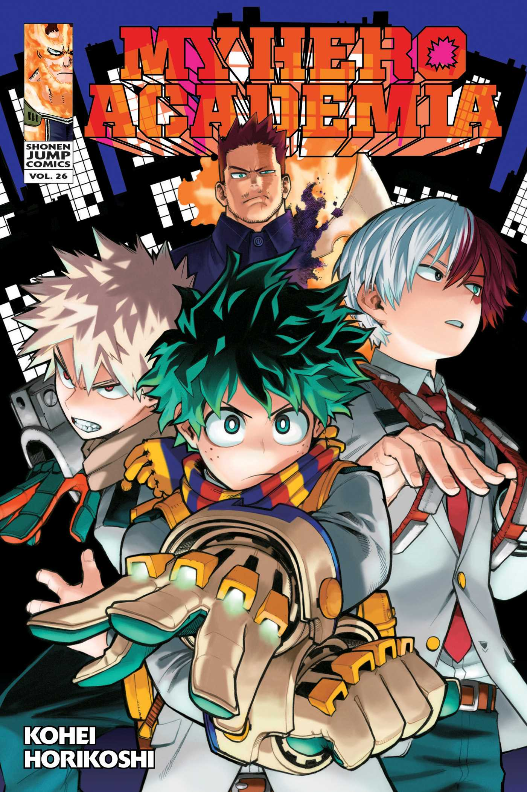

☰
Current Hits
These are the current hits serialized in Weekly Shonen Jump.
Enter the World of Heroes!

My Hero Academia began serialization in 2014 and as quickly as it started it became a juggernaut of japanese comics. The story follows Izuku Midoriya, a boy born without superpowers (called Quirks) in a world where they have become commonplace, but who still dreams of becoming a superhero himself. He is scouted by All Might, Japan's greatest hero, who chooses Midoriya as his successor and shares his Quirk with him after recognizing his potential, and later helps to enroll him in a prestigious high school for heroes in training.
When Faced with Death, What Will You Choose?

This manga is an up and coming masterpiece in my opnion, this manga began serialization in 2018 and was in fact a sequel to a one shot story called "Tokyo Metropolitian Cursed Technical School". The story follows high school student Yuji Itadori as he joins a secret organization of Jujutsu Sorcerers in order to kill a powerful Curse named Ryomen Sukuna, of whom Yuji becomes the host.
The Adventure of a Lifetime has Just started!
This manga is the best selling manga of all time, this manga started serialization back in 1997 and since then has became a staple in manga. The story follows the adventures of Monkey D. Luffy, a boy whose body gained the properties of rubber after unintentionally eating a Devil Fruit. With his crew of pirates, named the Straw Hat Pirates, Luffy explores the Grand Line in search of the world's ultimate treasure known as "One Piece" in order to become the next King of the Pirates.
The Continuation to the Story of Naruto Begins Here!
This manga is fresh off the heels of it's predecessor "Naruto". Boruto is a spin-off and a sequel to Kishimoto's Naruto, which follows the exploits of Naruto Uzumaki's son, Boruto Uzumaki, and his ninja team.